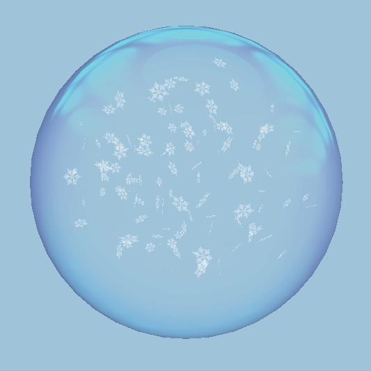
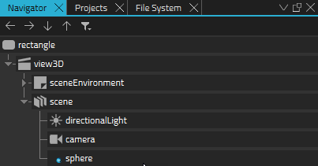
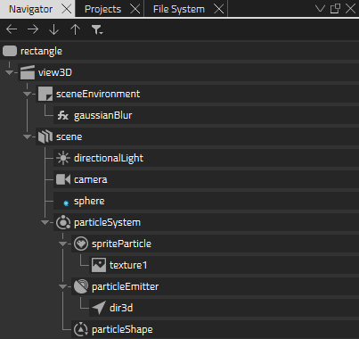
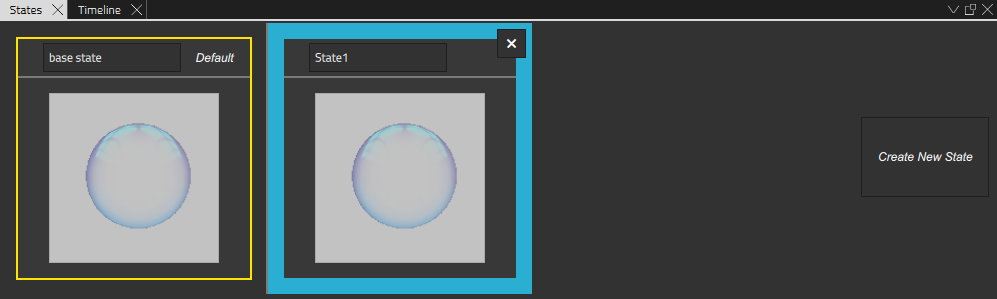
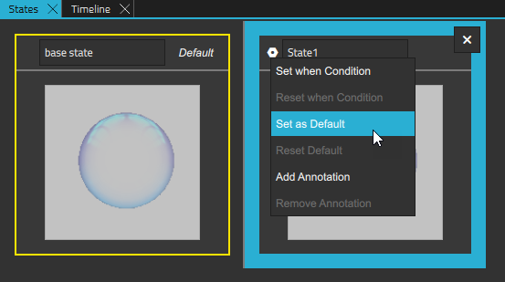

Particle System: Rain and Snow Effect

The Rain and Snow Effect tutorial illustrates how you can add a rain and a snow effect to your scene using the Qt Design Studio particle system.
You need to download the starting project for this tutorial from here before you start.
Download the project and open the faceparticles.qmlproject file in Qt Design Studio to get started.

Creating a Rain Effect
Adding a Particle System to Your Scene
To add a particle system, you first need to import the QtQuick3D.Particles3D module to your project:
- In the Component view, select
 .
. - Find QtQuick3D.Particles3D and select it to add it to your project.
- From Components, drag a Particle System to scene in Navigator.
Now you have added a particle system to your scene.
[Missing image rain-snow-tutorial-particle-system]
Adjusting the Behavior and Apperance of the Particle System
Next, you adjust the position, behavior, and apperance of the particle system to create a simple rain effect:
- Adjust the position of the particle system to align with the sphere. In Navigator, select particleSystem and in Properties, set Translation > Y to 193.
- Set the rain-drop-white-square.png as texture for the particles. From Assets, drag rain-drop-white-square.png to spriteParticle.
- Adjust the apperance and behavior of the sprite further. In Properties, set:
- Particle Scale to 10.
- Max Amount to 1000.
- Color to #91ffffff.
- Fade In Effect to FadeNone.
- Fade Out Effect to FadeNone.
- Now you have set the apperance of the particles. Next, adjust the particle emitter. In Navigator, select particleEmitter, and in Properties set:
- System to particleSystem.
- Emit Rate to 1500.
- Life Span to 100.
- Life Span Variation to 0.
- Particle End Scale to 1.
- Particle Scale Variation to 0,5.
- Particle End Scale Variation to 0,5.
- Particle Rotation > Variation > X, Y, and Z to 0.
- Particle Rotation > Velocity Variation > X, Y, and Z to 0.
- Transform > Translation Y to -69.
- Finally, you set the direction of the particles. In Navigator, select dir3d and in Properties set:
- Direction > Y to -500.
- Direction > Z to 0.
- Direction Variation > X, Y, and Z to 0.
Adjusting the Size of the Emitting Area
By default, the Particle Emitter emits particles from one point in the scene. In this scene you want to emit particles from a bigger area matching the size of the sphere. To do this, you need to add a Particle Shape component:
- From Components, drag a Particle Shape component to particleSystem in Navigator.
- In Navigator, select particleShape, and in Properties set:
- Type to Sphere.
- Extends X to 85.
- Extends Y to 85.
- Extends Z to 85.
- In Navigator, select particleEmitter, and in Particle set Shape to particleShape.

Now, the rain effect is ready. Press Alt+P to see it in the live preview.
Creating a Snow Effect
To make it easy, you can duplicate the particle system you created for the rain effect and adjust the properties to create a snow effect. To do this, first create a new state for the snow effect:
- In States, select Create New State.

Turning the Rain into Snow
- With the new state that you just created selected in States, in Navigator, select spriteParticle and set Color to #ffffff.
- In Navigator, select texture1 and set Source to snowflake.png.
- In Navigator, select particleEmitter and set:
- Emit Rate to 250.
- Life Span to 450.
- Particle Rotation > Variation > X, Y, and Z to 180.
- Particle Rotation > Velocity Variation > X, Y, and Z to 200.
- In Navigator, select particleEmitter > dir3d and set:
- Direction > Y to -100.
- Direction Variation X, Y, and Z to 10.
Now you can run the snow effect in the live preview:
- In States next to State1 select
 and select Set as Default.
and select Set as Default. - Press Alt+P.

See also Particles.